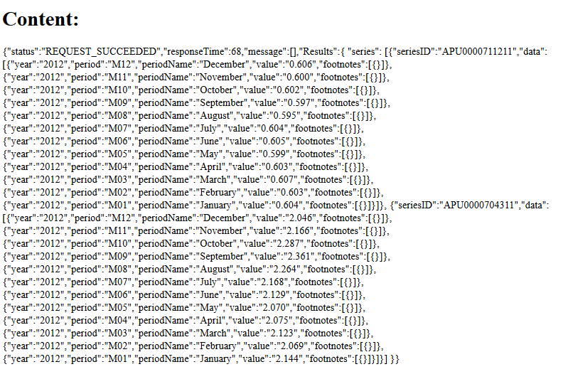

To retrieve data for certain years and for certain series, we need to make POST request to http://api.bls.gov/publicAPI/v1/timeseries/data/. It is very similar to requesting data for multiple series. However, additionally in JSON object we include years. Here is how the JSON object will look:
{"url":"http://api.bls.gov/publicAPI/v1/timeseries/data/",
"method":"POST",
"headers":{"Content-Type":"application/json"},
"body":'{"seriesid":["APU0000704311", "APU0000711211"],
"startyear":"2012", "endyear":"2012"}It is important to keep square brackets even if you include only one series ID. For example, "body":'{"seriesid":["APU0000704311"]. Otherwise, you get the error message that the request failed.
Request code looks the same as in the previous section with a modified JSON object:
app.get('/',function(req,res,next){
var context = {};
request({
"url":"http://api.bls.gov/publicAPI/v1/timeseries/data/",
"method":"POST",
"headers":{"Content-Type":"application/json"},
"body":'{"seriesid":["APU0000704311", "APU0000711211"], "startyear":"2012", "endyear":"2012"}'}, function(err, response, body){
if(!err && response.statusCode < 400){
context.results = body;
res.render('test',context);
} else {
if(response){
console.log(response.statusCode);
}
next(err);
}
});
});We have average prices for ham and bananas for 2012:
We are familiar with retriving data from the BLS API. In the next section, we look at the small web application example that involves making a request to the BLS API.
Prev Next